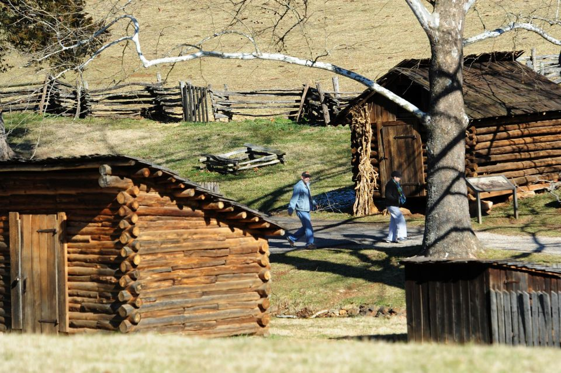
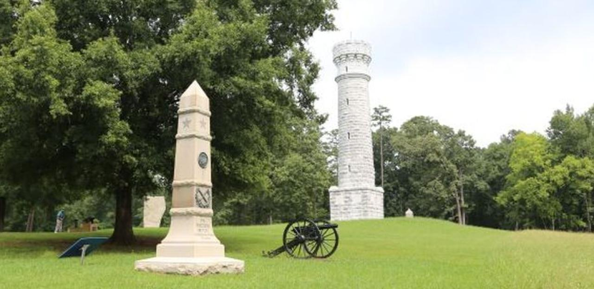

more
Booker T Washington state park
There is so much to do at Booker T Washington state park. There are beautiful campgrounds and hiking. in addition, there are some beautiful cabins to explore and is a great place for a photo. Overall, just driving through the park is a wonderful experience no matter what you stop to enjoy.
Chickamauga Chattanooga battle fields
The Chickamauga Chattanooga battle fields are rich with history of the civil war. As you stop to explore and learn about the war make shore to check out the historic cannons littered throughout the area. The battlefield also has many monuments and buildings in remembrance to all the fallen that gives us a closer look at the life of the men in the war.
